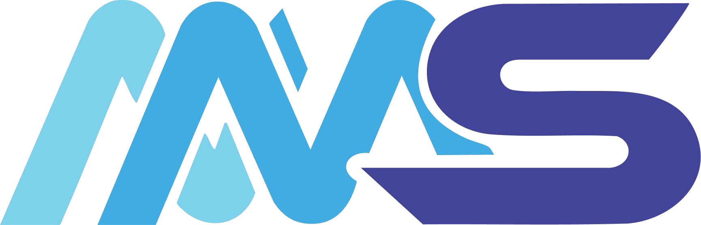
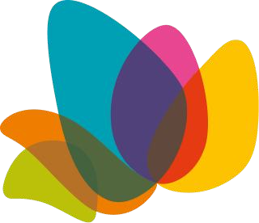
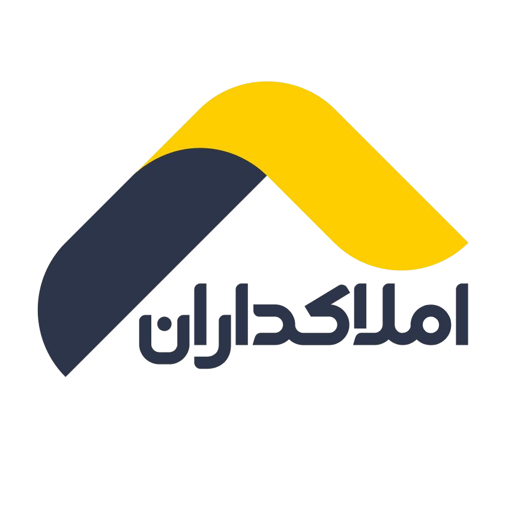

ABOUT ME · PRODUCT DESIGNER
I turn questions, patterns, and uncertainty into clearer product experiences.
What I value most is understanding the “why” before jumping to the “what.” I’m naturally curious, analytical, and always looking for the connections that make a product easier to understand and use.
3+Years designing
digital products
B2B · B2C · EnterpriseOpen to collaboration
HOW I WORKHow I think and work
A few principles guide how I make sense of complex problems and move toward useful, thoughtful solutions.
Ask firstQuestion before assuming.
I try to understand the problem before deciding what the solution should be.
Look deeperEvidence over instinct.
Research, observation, and feedback shape my decisions—not assumptions alone.
Connect the dotsConnect context.
I look for relationships between people, product decisions, constraints, and context.
Keep it clearClarity over complexity.
I aim to make products easier to understand, use, and evolve.
CAREER JOURNEYExperience shaped by real product challenges
From established enterprise systems to early-stage products, I’ve partnered with teams to make complex experiences more useful and coherent.

Product DesignerNosaz MohasebMay 2025 — PresentFull-time · Onsite
Full-timeOnsiteEnterprise software
Enterprise software company building municipal and organizational digital systems.
- Redesigned a core urban-planning workflow after interviews, field observation, support feedback, and process analysis revealed a mismatch between the system structure and the real operational process. The redesign was implemented and reduced repetitive work reported by the support team.
- Initiated and developed a task-based UX Pattern Library after identifying that reusable UI components alone could not solve behavioral inconsistencies across products. The framework is now used across Commission, Real Estate, and Citizen Portal products.
- Owned the complete UX/UI design of a comprehensive Commission Management System, covering forms, meetings, decisions, cases, documents, workspaces, minutes, and multiple workflow states.
- Led end-to-end UX/UI design of a Real Estate & Property Management System, contributing to requirements and process analysis for property registration and appraisal.
- Contributed to the redesign of a Citizen Services Portal across citizen-facing and administrative experiences, collaborating on business and UX analysis.
- Designed experiences for Ravin, an AI support and training assistant, contributing to research and interaction design beyond the chat interface.
- Supported product analysis through user and stakeholder interviews, BRD/SRS preparation, BPMN/BPMS modeling, domain research, usability evaluation, and collaboration with Product, Engineering, QA, and Support.
UI/UX DesignerDanajouApr 2025 — Feb 2026Part-time · Remote
Part-timeRemoteEdTech
EdTech platform enabling verified experts to publish courses, webinars, and events.
- Redesigned registration and content-publishing workflows, including long multi-session course creation and content upload.
- Restructured forms and flow sequencing to reduce ambiguity for creators handling large amounts of course content.
- Designed question-submission and educator-response experiences for a separate K–12 educational product.
- Conducted usability testing on accessible user groups and iterated designs based on findings.

UI/UX DesignerOPAL Shopping CenterNov 2024 — Jul 2025Part-time · Remote
Part-timeRemote
- Led the redesign of the main customer-facing website across stores, restaurants, events, entertainment, services, navigation, news, profile, and other core sections.
- Worked across information architecture, user flows, wireframes, high-fidelity UI, and interactive prototypes.
- Built a reusable UI Library to create consistency across the redesigned experience.

Product DesignerAmlakdaranAug 2024 — Mar 2025Full-time · Onsite
Full-timeOnsite
Early-stage startup covering property listings, construction-material commerce, and building services.
- Conducted stakeholder and user interviews and extensive competitive analysis to identify usability and product issues.
- Redesigned property search and filtering to improve the weak property-discovery experience; the solution was implemented and tested internally.
- Designed role-based panels for real-estate consultants, agencies, and property developers with different access levels.
- Established a reusable UI Library as a common visual foundation for the emerging product.
SKILLS & DEEP SPECIALIZATIONS
What I bring to a product team
01 / PRODUCTProduct & UX
Enterprise UXComplex Workflow DesignUX PatternsDesign TokensProtoPie Interactions
02 / DISCOVERYResearch & Analysis
User InterviewsBenchmarkingUsability TestingWorkflow AnalysisDomain Research
03 / STRATEGYBusiness & Process
Problem FramingRequirements AnalysisBPMN / BPMSBRD / SRS Documentation